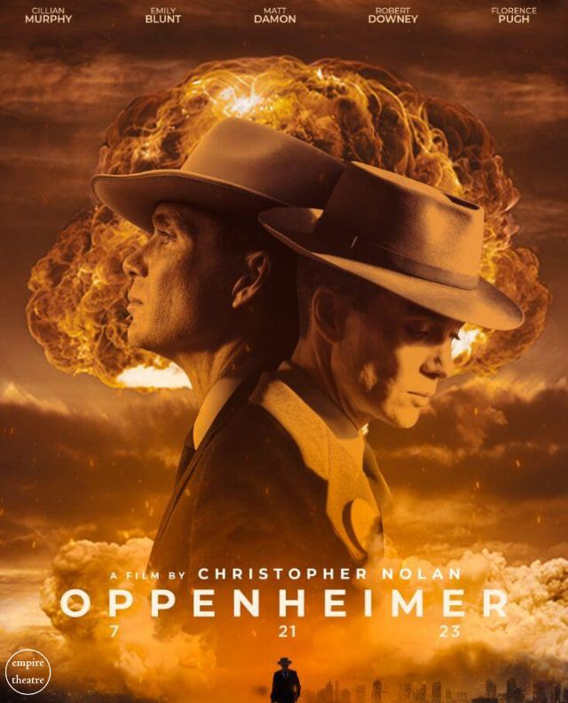
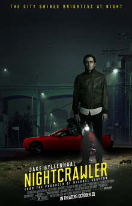
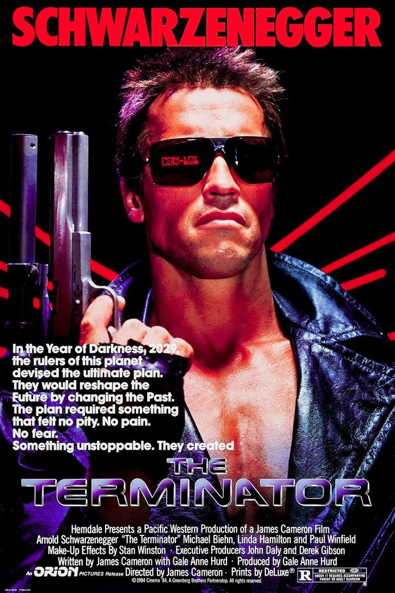
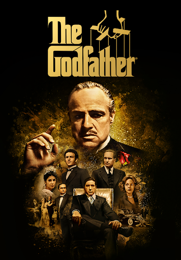

Oppenheimer is a 2023 epic biographical thriller film written, co-produced, and directed by Christopher Nolan. It follows the life of J. Robert Oppenheimer, the American theoretical physicist who helped develop the first nuclear weapons during World War II.

Nightcrawler is a 2014 American neo-noir crime thriller film written and directed by Dan Gilroy in his directorial debut. It stars Jake Gyllenhaal as an unhinged stringer who seeks out violent and morbid events late at night in Los Angeles so he can film them and sell the exclusive footage to a local television news station. The supporting cast includes Rene Russo, Riz Ahmed, and Bill Paxton.

Terminator is an American media franchise created by James Cameron and Gale Anne Hurd. It is considered to be of the cyberpunk subgenre of science fiction. The franchise primarily focuses on the events leading to a future post-apocalyptic war between a synthetic intelligence known as Skynet, and a surviving resistance of humans led by John Connor.

The Godfather is a 1972 American epic gangster film[2][3][4] directed by Francis Ford Coppola, who co-wrote the screenplay with Mario Puzo based on Puzo's best-selling 1969 novel. The film features an ensemble cast that includes Marlon Brando, Al Pacino, James Caan, Richard Castellano, Robert Duvall, Sterling Hayden, John Marley, Richard Conte and Diane Keaton. It is the first installment in The Godfather trilogy, which chronicles the Corleone family under patriarch Vito Corleone (Brando) and the transformation of his youngest son, Michael Corleone (Pacino), from reluctant family outsider to ruthless mafia boss.
Whiplash is a 2014 American psychological drama film written and directed by Damien Chazelle, starring Miles Teller, J. K. Simmons, Paul Reiser, and Melissa Benoist. It focuses on an ambitious music student and aspiring jazz drummer (Teller), who is pushed to his limit by his abusive instructor (Simmons) at the fictional Shaffer Conservatory in New York City.